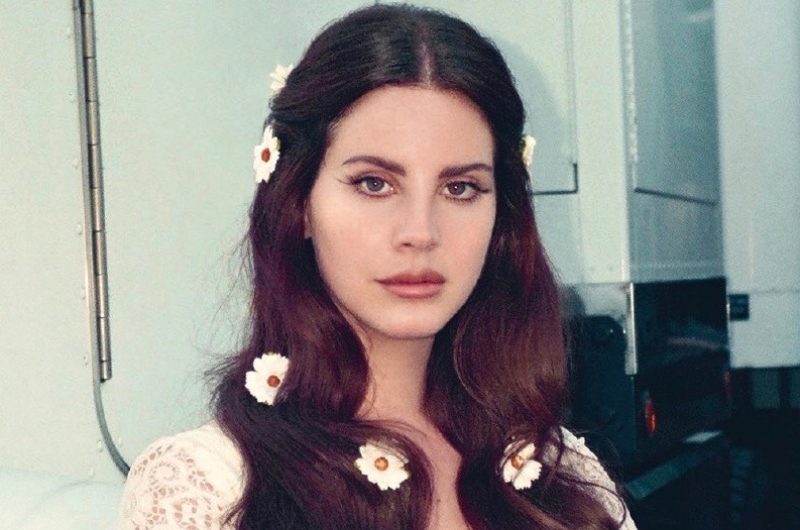

Primeiro de tudo, se vc ouve AM e não conhece Lana del Rey...ejeta da vida querido, ta no lugar errado.
Mas sobre a artista em si, ela tem uma vibe mais melancólica, mais puxada pro folk. Ou seja, musica de corno cult.
The Neighbourhood
Uma das minhas preferidas, eu pessoalmente acho neles uma vibe totalmente diferente das outras, meio reconfortante
,gosto de ouvir Sweather Heather e imaginar uma cena fofinha de dois adolescentes cult olhando o horizonte como se fossem super vividos,
e claro, eu como um deles (de preferencia do lado de uma gótica rabuda).